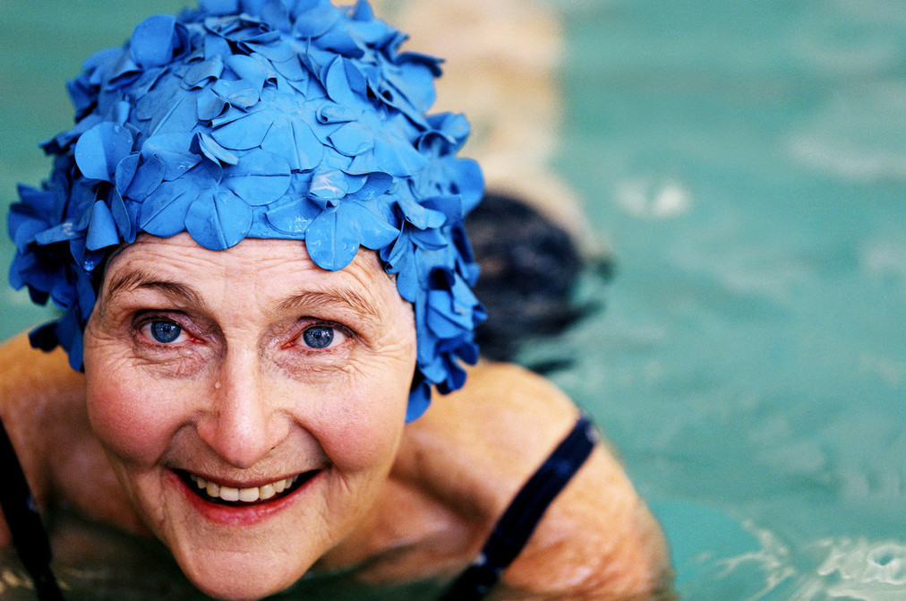

<ion-view view-title="Recovering after surgery">
  <ion-content class="padding">
     <div class="item-body" on-swipe-left="go('tabs.aftersurgery')">
        <h3 style="margin-top:-.5em;">Relaxation for <br/>Rapid Recovery</h3>
        <h4 style="margin-top:-.5em;">Joint Replacement</h4>
        
        
        <marked>
          Joint replacement is very effective, but recovering from surgery can take time. 

          This guide has practical tips for greater comfort and a faster recovery.</marked>
      </div>
    </div>

    
    <a class="button button-full ion-chevron-right button-positive" href="#/tab/aftersurgery"> What to expect after surgery</a>


<!-- 
      <div class="card">
        <div class="item item-divider">What to expect after surgery
        </div>
        <div class="item-body">
            <marked>
              Some pain after surgery is to be expected, but can be managed with painkilling drugs, and simple exercises you can do on your own.
            </marked>

            <a class="button button-clear button-positive" href="#/tab/aftersurgery">More on what to expect after surgery</a>
        </div>
      </div>
      <div class="list card">
        <div class="item item-divider">Making a full recovery: need to know</div>
        <div class="item item-body">
                                  
          <marked>
          - How we think and feel has a big impact on our pain
          - Getting mobile is really important
          - Relaxation and positive suggestion can help reduce pain
          
          
          </marked>

          </div>
        </div>
      </div>


      <a  analytics-on="click" class="button icon-right ion-chevron-right  button-full button-positive"  href="#/tab/recovering">
          Learn how to recover quickly
      </a>
-->
  
    
            
  </ion-content>
</ion-view>      
